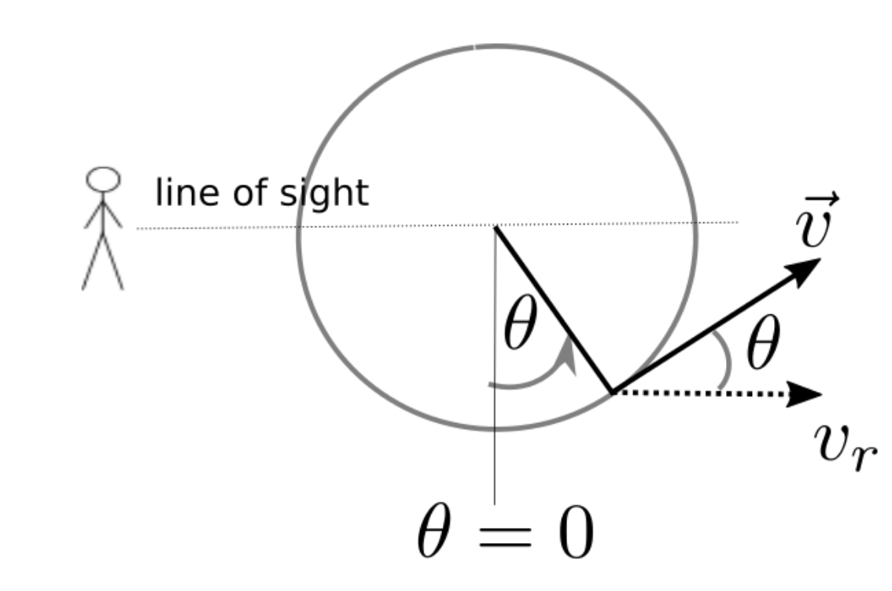

Forrige side

Vi ble enige om at vr(t) = v*cos θ(t) Men for å ha en komplett modell, trenger vi også tidsavhengigheten til θ(t). Vi skal uttrykke den med omløpsperioden P. lEr den:
θ(t) = 2πPt $\theta(t)=\frac{P}{t}$ θ(t) = Pcos 2πt $\theta(t)=\frac{2\pi P}{t}$ $\theta(t)=\frac{t}{P}$ $\theta(t)=\frac{2\pi t}{P}$